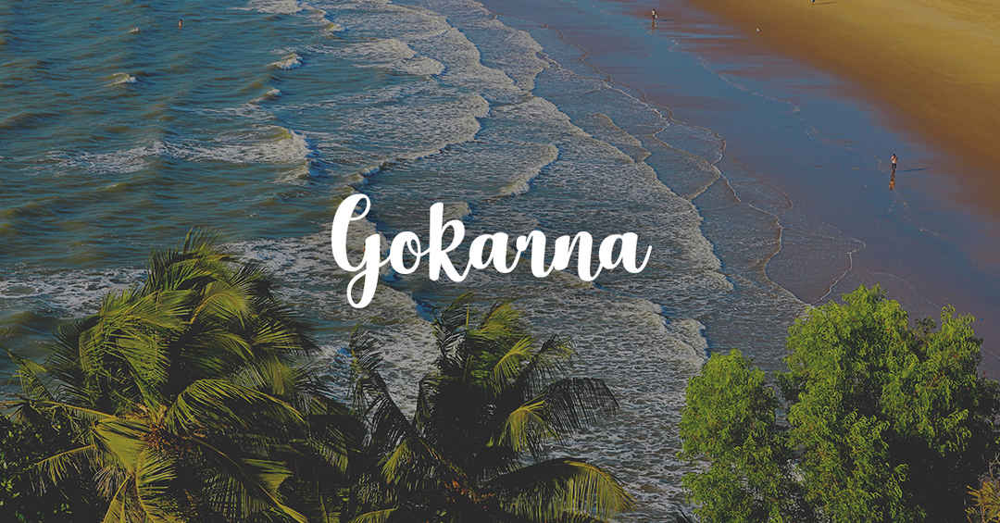

Char Dham
Looking for Chardham packages? Located in the Garhwal region of Uttarakhand, in fact high in the Garhwali Himalayas are some of Hinduism’s most significant sites, also called Chota Chardham - Kedarnath, Badrinath, Gangotri and Yamunotri. The temples here marking the spiritual sources of the religion’s four sacred rivers - Ganga, Yamuna, Alaknanda and Mandakini, together making up one of the most prominent pilgrimage circuits in the country. The time between April and November each year witnesses the coming of devotees in thousands who brave the harsh weather, the treacherous mountain roads and trails to get to them.
Madhya Pradesh
We Offer different Tour Packages of Madhya Pradesh like MP Wildlife Tour Packages, MP Heritage Tours, MP Pilgrimage Tours, MP Educational Tour Packages, MP Tribal and Cultural Tours, The Tour Itinerary for best of Mp Tour Packages Start from 07 Nights/ 08 Days and are upto 19 Nights / 20 Days. We have our Own Fleet of vehicles to cater the same, We also provide information of MP tourist places, Mp tour & Travel itineraries, Mp travels, Mp tours, tours and travels in Madhya Pradesh as a complete Travel Guide of Madhya Pradesh. Madhya Pradesh is having 03 World Heritage sites named Khajuraho Sanchi and Bhimbetka Caves.
Hampi-Gokarna

Day 1- Arrive at Dabolim airport or Ankola railway station. ... Day 2- Visit the most famous Om beach of Gokarna, which makes the sign of Om with its shore and hence the name. Afterwards, visit the Kudle beach another attraction of Gokarna. Later visit the famous Mahabaleshwar temple dedicated to Lord Shiva.
Virupaksha Temple, Vijaya Vittala Temple, Lotus Mahal, Yantrodharaka Hanuman Temple, Hampi Bazaar, Hippie Island, Coracle Ride, Queen's Bath, Matanga Hill, Archaeological Museum, Riverside Ruins, Underground Temple, Gagan Mahal, Hemakuta Hill, and many other tourists places.
Gujarat
Located on the country's western coast, Gujarat is one of the most vibrant coastal states of India, rich in crafts, history and natural beauty. The place derives its name from 'Gujaratta' meaning the land of Gurjars who passed through Punjab and settled in some parts of Western India. They were the sub tribes of the Huns who ruled the area during 8th and 9th centuries AD. The history of Gujarat dates back to 2000 BC. It is believed that Lord Krishna evacuated Mathura and settled his new capital on the west coast of Surashatra at Dwarka. Gujarat is bounded by the Arabian Sea on the west, Pakistan and Rajasthan in the north and northeast respectively, Madhya Pradesh in the southeast and Maharashtra in south. Gujarat with the longest coastline (1290km) in the country is renowned for its ancient temples, virgin beaches, and historic capitals replete with immense architectural assets, wildlife sanctuaries and hill resorts. Besides its varied destinations, this industrially advanced state is also known for its fascinating handicrafts, textiles, mouthwatering cuisine, lively fairs, festivals, and the colourful lifestyle.
Kashmir
Before considering one of the Kashmir packages, you need to know in detail about the seasons of Kashmir and which more favourable for travel. Otherwise a year-round destination, it would be ideal to travel to Kashmir in the summer to fall months between March and October. You can see its blossoming gardens, hear the bird song, take in sweeping views of the alpine meadows and simply watch Srinagar’s Dal Lake hustle back to life. Visit Pahalgam between April and November for some rafting and horse-riding. For golf, come between April and November. But if snow is your thing and you care for some snowboarding and skiing, head to Gulmarg between December and first half of March.
Kerala

Known as the “God’s Own Country”, Kerala is surely one of the most beautiful places in India. Kerala or Keralam is a Malayalee word made up of two parts; ‘Kera’ meaning coconut and ‘alam’ meaning land. The land of coconut trees is a destination that has something for every kind of traveller. Whether you want to sail the glistening backwaters or lose yourself in the mystical coastal greenery, Kerala is an ultimate tourist destination to experience bliss and serenity.